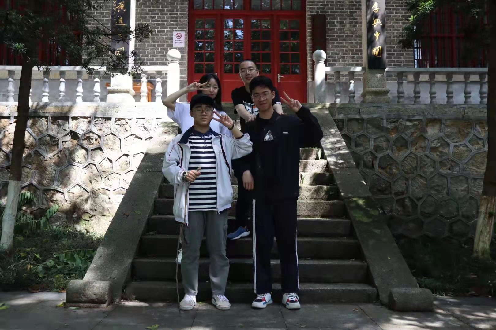
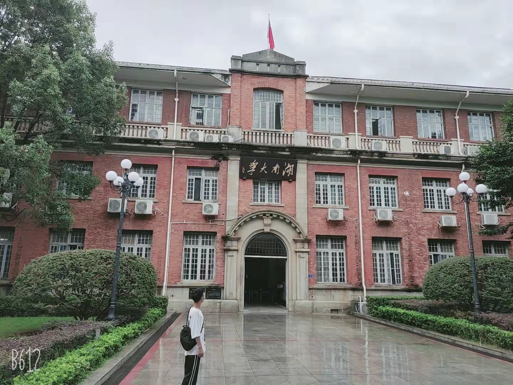
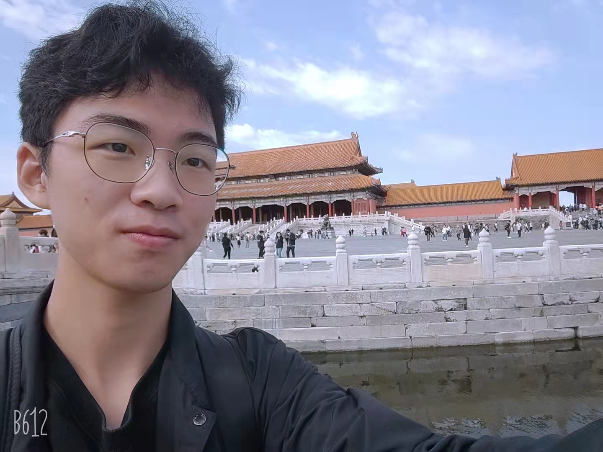
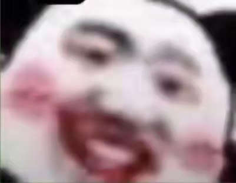

唉呀妈呀，第一次做网页还有点小激动呢 (o ° ω ° O ) ノ゙

在开始yue我的读书生涯之前，我想还是得好好解释下我名字的由来。 一提起敦煌，人们都会自然的将其与璀璨的历史文化，神秘的戈壁遗珠联系起来。一提起敦煌，大家耳畔似乎回响起了千百年前凄清冷冽的阵阵驼铃，眼前浮现出惊艳绝伦的飞天壁画，嘴边止不住的是长吁短叹的赞美与怜惜。 。。。。。。额，不过这些似乎都和我没关系（狗头） ≖‿≖✧ 。我是地道湖南人，我没有甘肃的亲戚，甚至我都没去过敦煌(呜呜，本来决定打完暑假工就去的，但是因为疫情计划搁浅了（/TДT)/)。因为在我的大家庭里我是敦字辈，便起了这样一个名字。 好了，言归正传，我的小学初中都是在我的家乡——一个叫贯塘的小地方读的。高中去了南岳衡山脚下的（百年名校，可能名字不太响，O(∩_∩)O哈哈~）岳云中学。 这是我高中的照片,右下是我。（小学的黑历史还是不放在这丢人现眼了 ≖‿≖✧）  再附上一张开学前在湖大拍的傻照 ≖‿≖✧  当然大学就到了咱们海淀区最大赌场P大啦 
关于兴趣爱好嘛，用“人菜瘾还大”来形容最合适不过（≧▽≦ ）。啥都喜欢一点，但又啥都只会一点（捂脸）。 